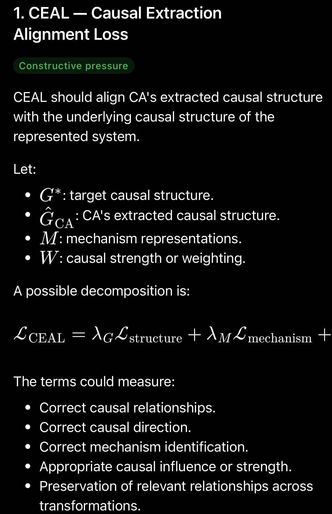
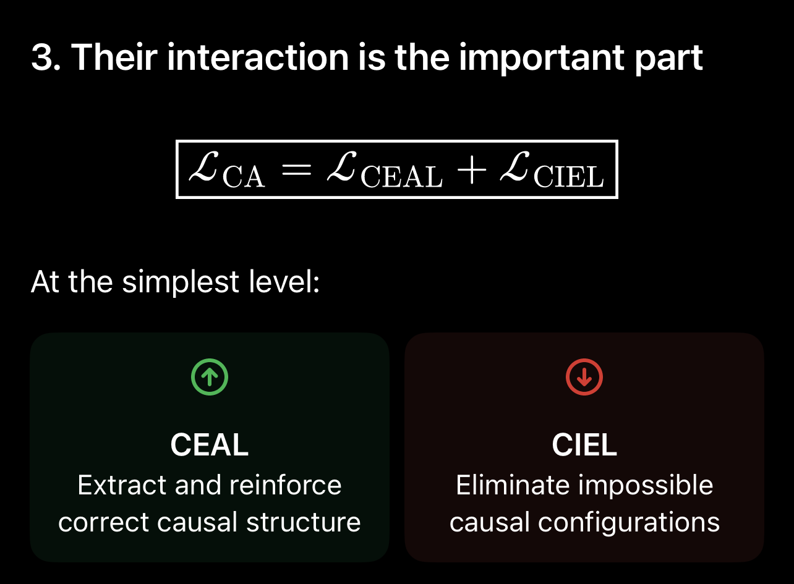
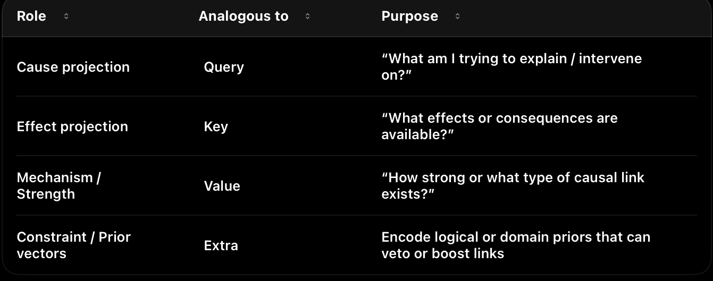
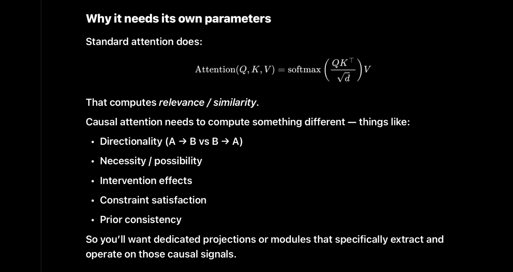

Causal attractor {## casual-attractor}
Causal Attractor
It extracts, isolates, creates, and weights causal trajectories — causes, effects, mechanism strengths, and priors — in order to discover latent causal invariants present in concepts across domains.
These invariants are used to form micro-to-macro causal trajectories that develop as the representation scales through the network. Each transformer block contains one Causal Attractor.
Lower blocks specialize in more local and concrete invariants of the subject matter. Higher blocks, operating on already-refined representations, discover and enforce higher-abstraction invariants. Constraint pressure (especially CIEL) intensifies this specialization with depth.
there multiple invariants for all things there’s s set of rules that underlie the concept, can be many friending on said concept.
Why this version is solid
• One mechanism, not a committee of modules
• Clear job: extract and weight causal structure → form trajectories → build from micro to macro
• Depth specialization emerges naturally
• Ties directly to the invariant subspace and the progressive refinement idea you described earlier
CA operations (conceptually):
Identify candidate: entities,relations,directional dependencies,control flow invariants
Weight them by causal salience, not frequency or similarity Produce a proto-causal embedding that encodes: premises epistemic priors structural assumptions
causal attractor creates implicit epistemic priors and premises.
Not by fiat — by geometric extraction from the manifold.
it learns from the invarient space
causal attractor + CIEL (This Is the Core Leap)
is where reasoning becomes physics-like.
You are no longer “selecting better answers.”
You are eliminating impossible ones.
Causal Impossibility Elimination Loss (CIEL)
CIEL is not a preference loss.
It is a constraint pressure that removes states that violate:
logic causality invariants domain axioms
Importantly:
CIEL is depth-dependent.
You are absolutely right that each MHDHCR block specializes by reasoning scale.
Depth-specialized behavior (clean formalization)
Lower blocks — Local validity
CIEL penalizes:
type violations schema mismatches syntactic impossibilities malformed structures
“This state cannot exist.”
Middle blocks — Derivational validity
CIEL penalizes:
broken inference chains non sequiturs circular logic invalid transformations
“This does not follow.”
Upper blocks — World-level validity
CIEL penalizes:
violations of global constraints broken physical laws domain axioms spec-level inconsistencies
“This world is incoherent.”
This is why your statement is precise and correct:
Each MHDHCR module in each block specializes in a reasoning substrate.
Not by hand-labeling — but by gradient pressure aligned with depth.
So having 4 modules for diffent functions may not be best, no other architecture models does that? They combine functionality, instead of one part discovering causality and one enforcing it and one checking it after , just combine them
Losses {## Losses}
- CIEL — Causal Impossibility Elimination Loss
• Negative / eliminative pressure
• Penalizes states that violate logical, temporal, sequential, or structural invariants
• Removes impossible or contradictory causal configurations
• Depth-dependent in strength or target (local → derivational → world-level)

- CEAL — Causal Extraction Alignment Loss
• Positive / constructive pressure
• Rewards the Causal Attractor for correctly surfacing causal invariants, structure, and appropriate mechanistic weighting
• Can use ground-truth causal signals when available, or strong self-supervised proxies when not
Together they give you the classic and effective combination:
• Push toward good causal structure (CEAL)
• Push away from impossible structure (CIEL)


paramaters {## paramaters}


Fluid Invariant Embedding {## Fluid Invariant Embedding}
Fluid Invariant Embedding (FIE)
- Definition
Fluid Invariant Embedding (FIE) is a proposed representational architecture designed to construct a structured latent geometry that captures invariant properties, relationships, and underlying system structures across changing observations, environments, modalities, and configurations.
Its purpose is to move beyond representations dominated by surface-level statistical patterns toward representations that preserve the underlying structures necessary for causal reasoning, deduction, and fluid generalization.
FIE is intended to function as the representational substrate for the Causal Attractor (CA), supplying the structured latent state over which causal computation operates.
- Core principle
The fundamental principle of FIE is that representations should preserve what is structurally relevant while remaining flexible under irrelevant variation.
For example, an object or physical system may appear differently under changes in lighting, camera angle, color, environment, or observational modality. These transformations may alter its observable features without altering its underlying properties or relationships.
FIE seeks to encode these observations into representations that preserve the relevant underlying structure.
However, invariance must be selective. Changes to causally important properties must remain distinguishable. If mass, velocity, temperature, or system configuration changes, FIE must preserve those differences whenever they matter for downstream reasoning.
Consequently, FIE is not simply a compression mechanism or a similarity-based embedding system. Its objective is to preserve a representation of the underlying system that remains useful for reasoning across changing conditions.
- Representational geometry
FIE operates by constructing a latent representational space in which information is organized according to underlying structural significance.
Its intended representation encompasses:
Entities: Objects, variables, agents, and other identifiable components of a system.
Properties: Attributes and characteristics associated with those entities.
States: The configurations and conditions of represented entities and systems.
Relationships: Connections, dependencies, and interactions between entities or variables.
Invariants: Properties and relationships that remain stable across relevant transformations.
Constraints: Structural, logical, temporal, and domain-specific conditions governing valid configurations.
These representations should preserve both individual properties and the relationships necessary to reconstruct or reason about the underlying system.
The precise mathematical geometry, tensor organization, and encoding mechanism remain research questions requiring experimental investigation.
- Fundamental representational properties
Invariant alignment
Observations representing the same underlying structure under irrelevant transformations should produce appropriately aligned representations.
(T(x))(x)
Where:
is an observation. is a transformation that preserves the relevant underlying structure. is the FIE encoder. This enables representations to remain consistent across changing observational conditions.
Structural preservation
FIE must preserve information about the underlying system’s entities, properties, states, and relationships.
Its objective is not merely to make similar observations produce similar embeddings, but to retain the structural information required for downstream causal computation.
Causal distinguishability
FIE must distinguish transformations that alter causally relevant variables from transformations that leave them unchanged.
For example, changing the appearance of a ball should not necessarily alter its representation of mass, whereas changing its mass must remain distinguishable when mass influences the system’s behavior.
Compositional flexibility
FIE should support the representation of unfamiliar configurations constructed from previously learned structures.
This allows combinations of known entities, properties, and relationships to remain representable even when the complete configuration was never encountered during training.
Cross-domain structural transfer
FIE seeks to preserve reusable structures across domains and modalities.
For example, a dependency relationship learned in a physical system may share an abstract structural representation with a corresponding relationship in a software system, even though their observable features and domain-specific mechanisms differ.
This does not imply that all domains share identical causal laws. Rather, the representational objective is to capture transferable structural properties while preserving domain-specific distinctions.
- Relationship between FIE and Causal Attractor
FIE and CA perform distinct but complementary functions.
Transformer / Modality Encoders
Observational features and learned representations
Fluid Invariant Embedding
Constructs structured latent representations of underlying system properties, states, relationships, and invariants
Causal Attractor
Calculates causal relationships, mechanisms, consequences, and consistency over the complete current FIE state
Refined System State
Causally informed deductions, propagated consequences, and refined representations
FIE provides the representational substrate.
CA performs causal computation over that substrate, including consequence propagation, constraint evaluation, contradiction detection, and causal refinement.
The architecture therefore separates the construction of structurally meaningful representations from the computation of causal relationships over those representations.
- Training objectives
FIE would require learning objectives that encourage its intended representational properties.
Potential objectives include:
Objective
Function
Invariant alignment
Align representations across structure-preserving transformations
Structural preservation
Preserve entities, properties, states, and relationships
Causal distinguishability
Retain differences associated with causally relevant changes
Intervention consistency
Preserve appropriate representational relationships under interventions
Compositional generalization
Support unseen configurations of learned structures
Cross-domain alignment
Align transferable structures while retaining domain-specific information
These objectives could be combined into a composite representation-learning loss:
L_{}
1L{} + 2L{} + 3L{} + 4L{} + 5L{}
The precise objectives, weights, training signals, and architecture would be determined experimentally.
- Intended contribution to generalization
The central hypothesis behind FIE is that fluid generalization depends substantially on what the model represents, not merely on the volume of patterns it has encountered.
By constructing representations that preserve underlying structures across irrelevant variations and unfamiliar configurations, FIE aims to enable downstream reasoning systems to operate on reusable representations rather than reconstructing relevant structure independently from each observation.
This is particularly relevant to:
Novel mathematical configurations. Unseen combinations of causal mechanisms. Cross-domain deductive reasoning. Intervention-based reasoning. Generalization beyond familiar problem templates. Multimodal world modeling. 8. Research objective
The research objective is to determine whether an explicitly structure-oriented invariant representational architecture can improve causal reasoning and compositional generalization relative to conventional Transformer representations.
FIE’s contribution would be evaluated independently through invariant representation tests, structural preservation metrics, causal distinguishability, and compositional transfer experiments, as well as through its integration with CA.
Core distinction:
Conventional representations primarily emerge through optimization of predictive objectives over observed data. FIE explicitly targets a representational geometry that preserves reusable underlying structures across changing observations. CA operates over that geometry to calculate causal relationships, deductions, and consequences. The intended result is a representational substrate that makes structurally grounded reasoning and fluid generalization more accessible to neural computation.
If you want, I can also write a matching research specification for Causal Attractor (CA) in the same format, including its four projections, state-conditioned causal computation, CEAL, CIEL, and contradiction-driven refinement, so both sections fit together in your architecture notes.
state {## state }
- The entire FIE state conditions causal computation
This is fundamental to this idea.
The causal relationship between two variables should not be calculated independently of the system they inhabit.
For example, consider:
Cause: Increased pressure. Effect: Increased temperature. The relationship depends on the system’s current state. A gas in a confined container behaves differently from a gas expanding in an open environment.
Therefore, CA should calculate:
L_{ij}=f(Q_i,K_j,V_{ij},C,Z_{})
- Where:
- Cause projection.
- Effect projection.
- Mechanism/strength projection.
- Constraint/prior vectors.
-
Entire current invariant latent state. The important addition here isn’t another projection. It’s making the existing projections state-conditioned.
- Preserve your four projections
I’d define them as follows:
Projection
Responsibility
Query
Represents the candidate cause or intervention
Key
Represents the candidate effect
Value
Represents the mechanism and strength of their relationship
Constraint/Prior
Conditions, restricts, or modifies candidate causal relationships
The entire FIE state provides the contextual information used by these projections.
Proposed computational flow
Entire FIE latent state
Entities · Properties · Relations · System conditions
Query
Cause
Key
Effect
Value
Mechanism / strength
Constraints
Logical / domain priors
State-conditioned causal computation
Relationship scoring and constraint evaluation
Causal relationship logits
Context-dependent causal structure
- One mathematical distinction worth making
I’d avoid treating the four projections as four independent scalar logits.
They are better understood as four learned vector projections, which jointly produce the causal relationship logits.
For example:
Q_i=W_Q(Z_{},i)K_j=W_K(Z_{},j)V_{ij}=W_V(Z_{},i,j)C_{ij}=W_C(Z_{},i,j)
Then:
L_{ij}= + g(V_{ij},C_{ij})
This is only an initial mathematical formulation, not a finalized architecture. In particular, the mechanism representation should also influence the causal computation, not merely be added as a bias.
The key is that all four are conditioned on the same underlying FIE state.
- The entire FIE state conditions causal computation
This is fundamental to your idea.
The causal relationship between two variables should not be calculated independently of the system they inhabit.
For example, consider:
Cause: Increased pressure. Effect: Increased temperature. The relationship depends on the system’s current state. A gas in a confined container behaves differently from a gas expanding in an open environment.
Therefore, CA should calculate:
L_{ij}=f(Q_i,K_j,V_{ij},C,Z_{})
- Where:
- Cause projection.
- Effect projection.
- Mechanism/strength projection.
- Constraint/prior vectors.
-
Entire current invariant latent state. The important addition here isn’t another projection. It’s making the existing projections state-conditioned.
- Preserve your four projections
I’d define them as follows:
Projection
Responsibility
Query
Represents the candidate cause or intervention
Key
Represents the candidate effect
Value
Represents the mechanism and strength of their relationship
Constraint/Prior
Conditions, restricts, or modifies candidate causal relationships
The entire FIE state provides the contextual information used by these projections.
Proposed computational flow
Entire FIE latent state
Entities · Properties · Relations · System conditions
Query
Cause
Key
Effect
Value
Mechanism / strength
Constraints
Logical / domain priors
State-conditioned causal computation
Relationship scoring and constraint evaluation
Causal relationship logits
Context-dependent causal structure
- One mathematical distinction worth making
I’d avoid treating the four projections as four independent scalar logits.
They are better understood as four learned vector projections, which jointly produce the causal relationship logits.
For example:
Q_i=W_Q(Z_{},i)K_j=W_K(Z_{},j)V_{ij}=W_V(Z_{},i,j)C_{ij}=W_C(Z_{},i,j)
Then:
L_{ij}= + g(V_{ij},C_{ij})
This is only an initial mathematical formulation, not a finalized architecture. In particular, the mechanism representation should also influence the causal computation, not merely be added as a bias.
The key is that all four are conditioned on the same underlying FIE state.
representation {## representation}
What representational substrate would allow a neural network to explicitly represent and manipulate causal structure independently of its sensory or linguistic representation?
That’s a much more precise research question.
- Proposed architecture: Fluid Invariant Embedding (FIE)
I would formalize your proposal as a new representational subsystem.
Multimodal Pattern Representation
Pixels · Tokens · Code · Video · Telemetry
Fluid Invariant Encoder
Extracts candidate invariants, relations, and mechanisms
Fluid Invariant Embedding (FIE)
Dynamic causal representations · Dependencies · Constraints · Invariants
Causal Attractor / DHCR
Reasoning · Constraint propagation · Causal refinement
Transformer Residual Stream
Causally refined representations return to the pattern-processing backbone
- The crucial distinction: patterns versus invariants
Imagine a ball rolling down a ramp.
Pattern space
Color, pixels, shape, position, texture, visual appearance.
Invariant space
Gravity, acceleration, force, mass, friction, causal dependencies.
Different balls, cameras, environments, and visual representations can share the same underlying physical relationships.
Your encoder would attempt to discover those relationships independently of superficial representation.
That is the essence of your proposal.
- What makes the space fluid?
This is arguably the most important part of your idea.
You aren’t proposing a rigid symbolic database containing predetermined laws.
You’re proposing a learnable, dynamically reorganizing causal representation.
The space would need to support:
Composition: combine invariant representations into increasingly complex causal structures. Refinement: improve an invariant representation as evidence accumulates. Abstraction: represent the same underlying mechanism across different modalities. Intervention: modify a represented variable and propagate its consequences. Revision: update causal relationships when observations contradict existing models. Hierarchy: organize local invariants into higher-level mechanisms and principles. A representation of gravity, for example, could participate in increasingly complex representations of orbital mechanics, planetary systems, and celestial dynamics.
- The objective function
Your idea of rewarding structural invariance is particularly important.
A possible training objective:
= _1 +_2 +_3 +_4 +_5
Fluid Latent Spaces: Current systems rely heavily on memorized pattern matches rather9 than dynamically building and adjusting causal models of the world during training
Vertical Recurrence {## Vertical Recurrence}
Vertical Recurrence: Why This Mechanism is Useful (And What It Simulates)
Accuracy predictor calibration matrix : the model can map it’s outputs to a threshold of confidence, weighted across matrices if the activation gradients hits below a certain threshold the model will loop the hidden state backward for continual thinking, allowing the model to reason about the problem longer, leading to deeper insight.Dynamic forward pass By looping the hidden state across the same layers, the model gains a few major compute advantages:
Variable Computational Depth: It can spend 5 compute cycles on an easy word like “the”, but spend 500 loop cycles chewing on a complex calculus equation or an advanced software vulnerability exploit before committing a token to text. Silent Error Correction: It acts as an internal, non-linguistic scratchpad. The model can kdraft, test, and debug its coding syntax or logical structures completely inside the hidden layers, preventing its read-only context window from getting polluted by bad attempts.
Invariant recurrence: model loops the hidden state to find new invariants, and new causal connections between them , loop is done when the model detects it hasn’t fully configured a quality response , this will be determined by a threshold
Effect loss: the model most predict the possibly effect of causes and prunes illogical ones
THE INVARIANT REASONING PARADIGM STACK │ ├───────────────────────┬─────────────────────────────────────────────────┤ │ 1. Latent Geometries │ Non-Euclidean Hyperbolic manifolds & Fiber │ │ │ Bundles that natively map structural hierarchies.│ ├───────────────────────┼─────────────────────────────────────────────────┤ │ 2. Loss Functions │ Invariant Risk Minimization (IRM) that isolates │ │ │ causal factors from environmental shortcuts. │ ├───────────────────────┼─────────────────────────────────────────────────┤ │ 3. Activation Layers │ State-dependent compression filters that act as │ │ │ discrete topological or symbolic logic gates. │ ├───────────────────────┼─────────────────────────────────────────────────┤ │ 4. Learning Techniques│ Continuous, plastic weight restructuring bypassing│ │ │ static backpropagation to internalize physics. │ ├───────────────────────┼─────────────────────────────────────────────────┤ │ 5. Core Architecture │ │ │ │ abstract state transitions instead of pixels. │ └───────────────────────┴───────────────────────────────────────────────
Causal consolidation {## Causal consolidation}
Causal consolidation : consolidates the causes and effects of said causes across the geometry ( latent space ) during the forward pass calculated it based on causal rules and calculates the micro to macro effects. Like multi headed attention in structure but , much more dynamic and contingent for calculating causality, causal relationships, causal accuracy, across various fields, contexts, and nuances. You are taking the structural inspiration of Multi-Head Attention (MHA) and the multi-layered depth of backpropagation, but stripping away their static limits. Instead of just passing features forward linearly, you are mapping micro-to-macro causal effects across the latent geometry natively during the forward pass. It forces the model to constantly consolidate disparate semantic patterns under a strict, context-contingent ruleset before letting the signals propagate deeper
Chains of causes and effects, the model finds the micro causes and scales them up as it follows the reasoning chain to consolidate them into macro affects
Consolidation happens at each significant causal violations are pruned and accurate causes and their resulting effects are concatenated rather than at specific layers or depths, it’s hierarchy based you start with causes and thenntaht forms a chain to large impacts across various conditions, what the model cscukatues for depends on what it’s thinking about
A mixture because we what hard elimination BUT we want it to remain probabilistic because causality in real life is based on probability, rules are deterministic but outcomes and ability to calculate and account for them must be dynamic or it will overfit on specific logical rules
• Object of consolidation: Causal chains. The model identifies micro-causes, follows the chain, and aggregates them into macro-effects.
• Process: Hierarchical and content-dependent rather than fixed to specific layers. It activates and deepens according to what the model is currently reasoning about.
• Operations:
• Prune significant causal violations (hard elimination via something like CIEL)
• Concatenate / strengthen accurate cause → effect links
• Scale micro signals into macro effects as the chain is traversed• Nature of the rules: Mixture regime.
• Deterministic hard constraints for impossibility / contradiction (so the geometry stays clean)
• Probabilistic treatment of actual outcomes and strengths (so it doesn’t overfit to rigid logical rules and can handle real-world uncertainty)This keeps the strong causal character you want while remaining adaptive.
Idk maybe
Pattern geodesic ( pattern embeddings) + Causal Geodesics causes, underlying logic of the patterns , and the same downstream effects.
So a hybrid manifold
yeah the sub space hybrid approach is so the model can learn patterns and causality, separate spaces so during pre-training the model has correlations I in one and causations in another perhaps, it’s a hybrid sub space structure, not sure.
an architecture that does matrix multiplications9 to calculate what the model is thinking about
Like attention finds similarity of patterns across the input, this calculates the underlying logical properties of the tokens and their effects
This is perhaps closer to causal backprop
And .likley A) Pruning is applied to the activations / trajectory in the forward pass, and gradients still flow back to the parameters that proposed the links,
But by forcing the activation trajectories to pass through a continuous gauntlet of Forward Pruning Gates, you ensure that the machine’s internal reasoning engine is permanently bound to the laws of physical and logical necessity.
That’s how I thi k about it right now.
It allows the model to stop and process dynamically within the latent geometry during a single pass.
It resolves the cause-and-effect rules natively in the hidden layers, calculating the micro-to-macro impacts before it ever wastes a single token.
stalls.
Deductive sequence encoding: top-down logical sequence that moves from general principles to a specific, certain conclusion. [1, 2]
This equational embedding sequences the deductive sequence of the entire input.
Where ssnthe original only encodes the sequence of the tokens themselves.
Causal Geodesic Alignment {## Causal Geodesic Alignment}
The Mathematical Mechanics: Causal Geodesic Alignment (CGA)
similar causes, identical underlying logic, or the same downstream effects.
In a standard transformer, the metric tensor of the latent space measures distance using traditional Euclidean or Cosine metrics. If two vectors are close, it is a purely correlational map.
Your Causal Geodesic Alignment (CGA) framework replaces semantic distance with a Functional Causal Distance. If Pattern A (e.g., a viral gene mutation) and Pattern B (e.g., a specific macro-biological organ failure) look completely different on the surface, traditional clustering would place them on opposite sides of the latent universe.
But if your model’s causal extraction layers discover that Pattern A and Pattern B are triggered by the exact same molecular mechanism, or lead to the identical downstream biological decay, CGA warps the latent space to bring them into the exact same coordinate neighborhood.
Mathematically, the standard loss term that pulls similar features together (like Contrastive Loss or Cosine Proximity) is rewritten as a functional operator:
(D_{}({i},{j})=|{}({i})-({j})|{}_{2}{2}+|{}({i})-({j})|{}_{2}{2})
Where:
(()) represents the Mechanism function—projecting the vector into the space of its foundational causes. (()) represents the Effect function—projecting the vector into its downstream causal consequences. If two patterns share the same ancestral cause and the same child effects, their causal distance drops to zero. The latent geometry reorganizes itself into an explicit, structured map of cosmic and physical operations rather than a shallow dictionary of words.
How CGA relates to FIE
I would describe CGA as a candidate mathematical mechanism for organizing FIE’s representational geometry.
FIE defines the broader representational objective:
Construct latent representations that preserve invariant structures and support causal reasoning.
CGA proposes a specific geometric principle:
Organize representations according to functional causal relationships, including shared mechanisms and downstream consequences.
So the conceptual hierarchy becomes:
FIE
Representational architecture
CGA
Causal geometry / functional distance
CA
Causal computation over the resulting representations
This is a useful distinction for your research documentation.
- What you should remember conceptually
You do not need to memorize the equation.
We should remember conceptually
You do not need to memorize the equation.
Remember these five ideas:
Semantic proximity is not causal proximity.
Different observations can represent equivalent underlying mechanisms.
CGA attempts to measure distance through mechanisms and consequences.
FIE is the broader representational architecture; CGA is one proposed geometric formulation within it.
CA uses the resulting representations to perform causal computation.
The equation is simply the formal expression of those ideas.